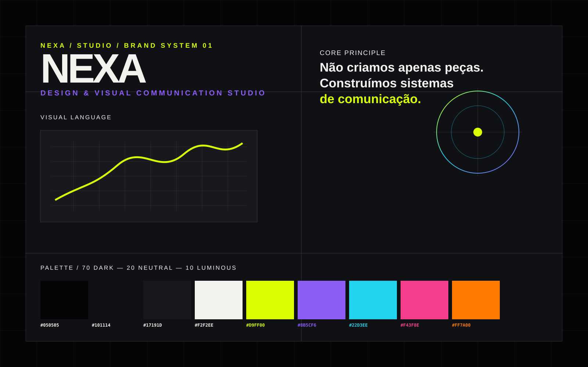
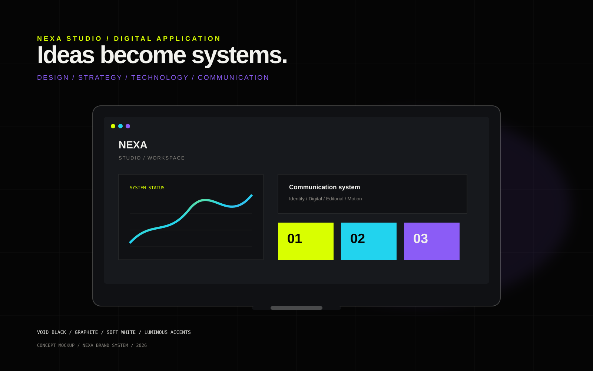
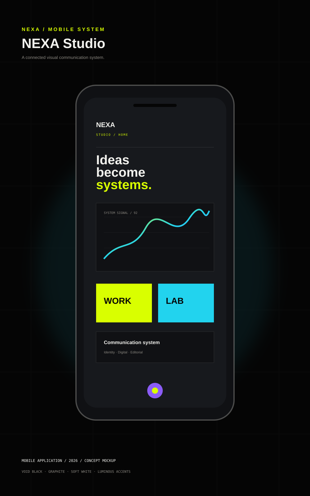
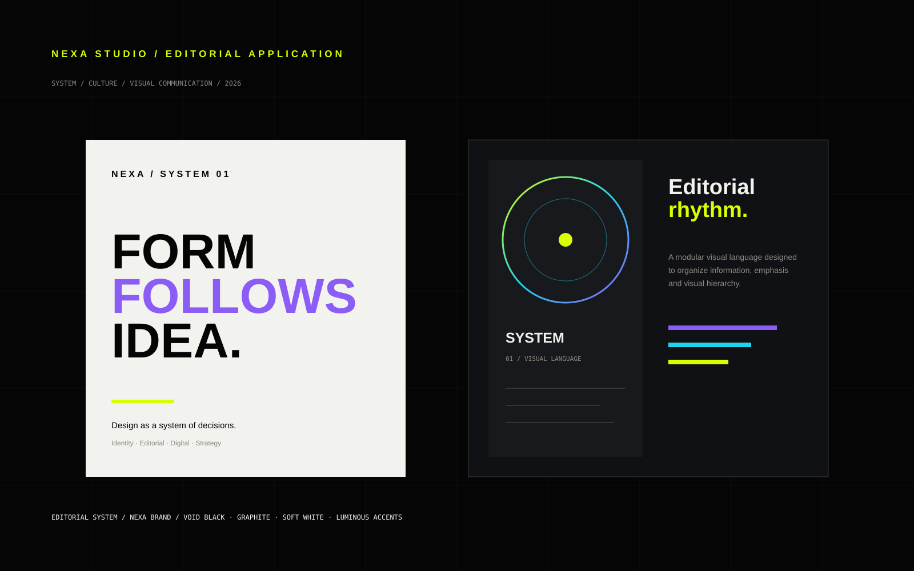

Master LogoOfficial brand mark
NEXA STUDIO / DESIGN MULTIDISCIPLINAR
Ideias
ganham
forma.
Criamos identidades, experiências e sistemas visuais para marcas, projetos e pessoas que têm algo para dizer.
CREATE
01—04
01—04
DESIGN
∞
∞
+
NEXA
01 / 08SCROLL TO EXPLOREVISITAS —
02 / MANIFESTO
Não criamos apenas peças.
Construímos sistemas
de comunicação.
A NEXA é um studio criativo que cruza design, estratégia e tecnologia para transformar pensamentos em experiências visuais claras, relevantes e memoráveis.
03 / SELECTED WORK
Ideias que
ganham forma.
Uma seleção de projetos conceituais para demonstrar linguagem, processo e possibilidades. Os projetos são demonstrativos.
04 / BRAND SYSTEM
Um sistema.
Várias aplicações.
O sistema visual da NEXA Studio traduz estratégia em uma linguagem consistente entre identidade, digital e editorial.




05 / CAPABILITIES
01
Branding
Identidade visual, direção e sistemas de marca.
↗02
Design Gráfico
Editorial, campanhas, apresentações e materiais impressos.
↗03
Design Digital
Interfaces, experiências, conteúdos e produtos digitais.
↗04
Comunicação Visual
Eventos, ambientes, sinalização e comunicação integrada.
↗05
Projetos Especiais
Design + tecnologia para ideias fora do formato.
↗06 / PROCESS
Pensar. Criar.
Construir. Comunicar.
01
Pensar
Entender contexto, problema e intenção.
02
Criar
Explorar conceitos, linguagens e possibilidades.
03
Construir
Transformar conceito em sistema funcional.
04
Comunicar
Entregar uma experiência coerente e relevante.
07 / PRINCIPLES
Curiosidade
antes da
fórmula.
01 — Estratégia antes da estética.
02 — Criatividade com propósito.
03 — Clareza é parte do design.
04 — Tecnologia como ferramenta.
05 — Consistência cria reconhecimento.
06 — Experimentação cria descoberta.
08 / START SOMETHING
Tem uma ideia?
Vamos dar forma.
hello@nexastudio.com ↗Contato demonstrativo — substituir pelo canal comercial real antes do lançamento.